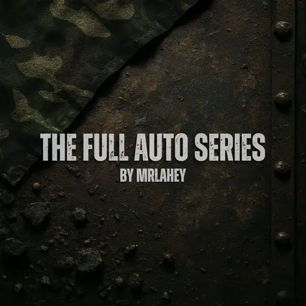

The Full Auto Series
- Downloads
- 877
- Favourites
- 7
- Mod lists
- 14
Introducing…
–The Full Auto Series–
- NEW!! Fast Paced Solutions for Fast Paced Players
Description.
This mod is quite simple in its goals, it adds separate versions of single fire weapons available in the game, but with a Full Auto quirk. Currently the mod has support for 5 vanilla weapons,
The mighty Knight’s Armament Company SR-25 7.62x51 marksman rifle, The precise Lone Star TX-15 DML 5.56x45 carbine, The nimble Soyuz-TM STM-9 Gen.2 9x19 carbine, The powerful Springfield Armory M1A 7.62x51 rifle, and the russian SAG AK-545 5.45x39 carbine.
These weapons are currently locked behind traders and their respective level, the list is as follows.
- Knight’s Armament Company SR-25FA 7.62x51 marksman rifle - Peacekeeper LL3 - 1150 USD
- Lone Star TX-15FA 5.56x45 carbine - Skier LL3 - 100000 Roubles
- Soyuz-TM STM-9FA Gen.2 9x19 carbine - Skier LL2 - 75000 Roubles
- Springfield Armory M1A 7.62x51 rifle - Peacekeeper LL3 - 950 USD
- SAG AK-545 5.45x39 carbine - Skier LL2 - 85000 Roubles
These weapons can also be purchased off of the flea market*, can be found in loot containers and can be used by the enemy themselves.
*I am still debating if I want to keep flea market availability, will keep it in until a decision is made.
NOTE:
Due to the semi automatic nature of the vanilla firearms, the weapon sounds are not quite correct for full auto fire, they are not as seamless as other firearms with actual FA capabilities, however in my testing I have not had a problem with this. The ‘issue’ practically goes away when using a supressor.
INSTALLATION
Simply unzip the file and drag the SPT folder into your base SPT install location.
HARD REQUIREMENTS
Due to the nature of this mod, WTT-CommonLib is required for this mod to work, installing this mod without WTT-CommonLib will crash the server on launch, and show a missing requirements error.
If you want these weapons to count towards quests, you will need to use the following mod.
https://forge.sp-tarkov.com/mod/1503/add-missing-quest-weapon-requirements
Special Thanks
Id like to thank the wonderful people of the SPTarkov server and the WTT Discord server for helping me with my questions and pointing me in the right direction when it came to modding resources.
Id Also like to thank the people who play with my mod enabled, please feel free to leave your feedback/suggestions in the comments, or reach out to me in the SPTarkov Discord under the name - mister.lahey -
Version